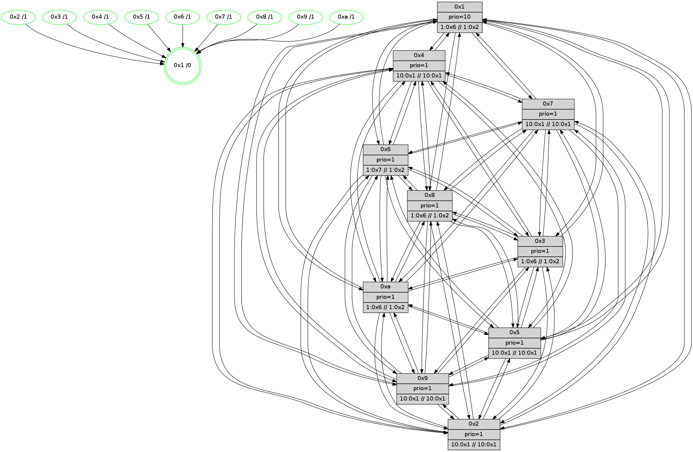

>> << IDX [start] -100 -25 -5 +0 +5 +25 +100 [580.492992163]
 Previous packets
575.006058 beacon04(faad) #0 coord=01,02,03,04,05,06,07,0a,09,08 cycle=688.0ms assoc 64 30 bf
575.016060 beacon05(faad) #0 coord=01,02,03,04,05,06,07,0a,09,08 cycle=688.0ms assoc 64 4a f2
575.026059 beacon06(faad) #0 coord=01,02,03,04,05,06,07,0a,09,08 cycle=688.0ms assoc 64 c4 25
575.036059 beacon07(faad) #0 coord=01,02,03,04,05,06,07,0a,09,08 cycle=688.0ms assoc 64 be 68
575.046065 beacon0a(faad) #0 coord=01,02,03,04,05,06,07,0a,09,08 cycle=688.0ms assoc 64 cf 63
575.056065 beacon09(faad) #0 coord=01,02,03,04,05,06,07,0a,09,08 cycle=688.0ms assoc 64 41 b4
575.066065 beacon08(faad) #0 coord=01,02,03,04,05,06,07,0a,09,08 cycle=688.0ms assoc 64 3b f9
575.077922 [Hello(8): seq=313 sym=5,2,3,4,7,6,9,10,1 sysInfo=coloring-mode-on,ColoringModeIndicationCalled stat=5:2,13,10,5/2:7,5,1,0/3:10,7,9,6/4:15,14,13,5/7:3,11,12,4/6:10,7,11,4/9:2,12,12,4/10:0,0,8,5/1:15,14,6,0]
575.081917 [Color(2) seq=27 @0:0 prio=1 >10.@1,1.@4,1.@6,1.@7 >>10.@1,1.@2,1.@3]
575.084126 [Hello(9): seq=313 sym=5,2,3,4,7,6,8,10,1 sysInfo=hasWarning stat=5:1,15,8,6/2:13,14,13,4/3:3,15,7,4/4:4,12,10,4/7:9,12,11,2/6:0,2,9,3/8:1,14,7,1/10:13,2,9,5/1:0,11,6,0]
575.086655 [Hello(4): seq=370 sym=5,7,6,2,3,9,8,10,1 sysInfo= stat=5:6,3,9,6/7:11,1,11,2/6:0,7,12,4/2:4,13,10,5/3:9,14,3,2/9:5,2,8,3/8:15,12,13,4/10:4,6,10,4/1:4,11,7,0]
575.090664 [Hello(5): seq=370 sym=7,6,4,3,1,9,8,10,2 sysInfo= stat=7:6,13,14,3/6:10,6,13,3/4:14,14,9,3/3:13,4,4,2/1:8,12,3,0/9:11,15,11,3/8:13,6,7,2/10:11,7,10,4/2:14,13,10,3]
575.095730 [Hello(10): seq=302 sym=6,2,3,8,9,5,7,4,1 sysInfo= stat=6:9,1,11,3/2:9,5,3,0/3:9,5,2,1/8:10,10,11,3/9:7,11,9,3/5:14,13,8,5/7:6,12,10,2/4:10,13,8,6/1:15,10,4,0]
575.103742 [Hello(3): seq=370 sym=1,7,6,2,4,8,9,10,5 sysInfo=coloring-mode-on,ColoringModeIndicationCalled stat=1:5,13,5,0/7:9,15,9,3/6:15,1,8,4/2:0,10,11,6/4:1,13,11,4/8:14,12,6,0/9:4,13,14,5/10:0,13,7,3/5:3,14,11,5]
----------------------------------------------------------------------
575.764207 beacon01(faad) #0 coord=01,02,03,04,05,06,07,0a,09,08 cycle=688.0ms assoc
-- color-indic=1 64 9a 31
575.774190 beacon02(faad) #0 coord=01,02,03,04,05,06,07,0a,09,08 cycle=688.0ms assoc 64 09 00
575.784190 beacon03(faad) #0 coord=01,02,03,04,05,06,07,0a,09,08 cycle=688.0ms assoc 64 73 4d
575.794190 beacon04(faad) #0 coord=01,02,03,04,05,06,07,0a,09,08 cycle=688.0ms assoc 64 04 a7
575.804190 beacon05(faad) #0 coord=01,02,03,04,05,06,07,0a,09,08 cycle=688.0ms assoc 64 7e ea
575.814190 beacon06(faad) #0 coord=01,02,03,04,05,06,07,0a,09,08 cycle=688.0ms assoc 64 f0 3d
575.824191 beacon07(faad) #0 coord=01,02,03,04,05,06,07,0a,09,08 cycle=688.0ms assoc 64 8a 70
575.834195 beacon0a(faad) #0 coord=01,02,03,04,05,06,07,0a,09,08 cycle=688.0ms assoc 64 fb 7b
575.844194 beacon09(faad) #0 coord=01,02,03,04,05,06,07,0a,09,08 cycle=688.0ms assoc 64 75 ac
575.854195 beacon08(faad) #0 coord=01,02,03,04,05,06,07,0a,09,08 cycle=688.0ms assoc 64 0f e1
575.865426 [Hello(2): seq=367 sym=4,5,7,6,3,9,8,10,1 sysInfo=hasWarning stat=4:3,14,10,2/5:4,1,8,4/7:8,1,11,3/6:13,7,12,3/3:14,14,4,1/9:7,13,8,1/8:15,6,5,1/10:6,4,6,3/1:1,12,4,0]
575.868954 [Color(10) seq=39 @0:0 prio=1 >1.@6,1.@7,1.@8,1.@9 >>1.@2,1.@3,1.@4]
575.871394 [Color(5) seq=34 @0:0 prio=1 >10.@1,1.@4,1.@6,1.@7 >>10.@1,1.@2,1.@3]
575.873831 [Color(9) seq=34 @0:0 prio=1 >10.@1,1.@4,1.@6,1.@7 >>10.@1,1.@2,1.@3]
575.876087 [Color(4) seq=25 @0:0 prio=1 >10.@1,1.@2,1.@3,1.@5 >>10.@1,1.@4,1.@6]
575.878043 [Hello(7): seq=370 sym=2,3,5,6,4,8,9,10,1 sysInfo= stat=2:3,9,0,7/3:11,13,14,7/5:13,9,13,8/6:0,2,0,0/4:4,5,14,5/8:13,2,15,2/9:9,9,15,7/10:15,12,13,5/1:14,9,2,0]
575.881221 [Color(8) seq=50 @0:0 prio=1 >1.@6,1.@7,1.@9,1.@a >>1.@2,1.@3,1.@4]
575.883229 [Color(7) seq=38 @0:0 prio=1 >10.@1,1.@4,1.@6,1.@8 >>10.@1,1.@2,1.@3]
575.885324 [Color(3) seq=50 @0:0 prio=1 >1.@6,1.@7,1.@8,1.@9 >>1.@2,1.@3,1.@4]
575.889020 [Hello(1): seq=279 sym=4,2,9,5,10,3,8,6,7 sysInfo=coloring-mode-on,ColoringModeRequestCalled stat=4:9,2,0,6/2:10,14,15,6/9:3,7,3,6/5:2,8,14,7/10:12,1,0,5/3:7,5,3,8/8:10,2,4,4/6:0,10,1,3/7:8,2,2,6]
575.892509 [Hello(6): seq=370 sym=2,3,5,4,7,9,8,10,1 sysInfo=coloring-mode-on,ColoringModeIndicationCalled stat=2:14,15,1,4/3:1,15,13,5/5:3,13,13,7/4:15,11,13,5/7:12,8,11,2/9:15,13,15,6/8:0,12,12,3/10:2,14,15,5/1:15,12,1,0]
575.895650 [Color(6) seq=50 @0:0 prio=1 >1.@7,1.@8,1.@9,1.@a >>1.@2,1.@3,1.@4]
----------------------------------------------------------------------
576.552337 beacon01(faad) #0 coord=01,02,03,04,05,06,07,0a,09,08 cycle=688.0ms assoc
-- color-indic=1 64 26 34
576.562319 beacon02(faad) #0 coord=01,02,03,04,05,06,07,0a,09,08 cycle=688.0ms assoc 64 b5 05
576.572321 beacon03(faad) #0 coord=01,02,03,04,05,06,07,0a,09,08 cycle=688.0ms assoc 64 cf 48
576.582321 beacon04(faad) #0 coord=01,02,03,04,05,06,07,0a,09,08 cycle=688.0ms assoc 64 b8 a2
576.592319 beacon05(faad) #0 coord=01,02,03,04,05,06,07,0a,09,08 cycle=688.0ms assoc 64 c2 ef
576.602322 beacon06(faad) #0 coord=01,02,03,04,05,06,07,0a,09,08 cycle=688.0ms assoc 64 4c 38
576.612321 beacon07(faad) #0 coord=01,02,03,04,05,06,07,0a,09,08 cycle=688.0ms assoc 64 36 75
576.622326 beacon0a(faad) #0 coord=01,02,03,04,05,06,07,0a,09,08 cycle=688.0ms assoc 64 47 7e
576.632326 beacon09(faad) #0 coord=01,02,03,04,05,06,07,0a,09,08 cycle=688.0ms assoc 64 c9 a9
576.642326 beacon08(faad) #0 coord=01,02,03,04,05,06,07,0a,09,08 cycle=688.0ms assoc 64 b3 e4
576.653563 [Hello(9): seq=314 sym=5,2,3,4,7,6,8,10,1 sysInfo=hasWarning stat=5:2,15,8,6/2:14,14,13,4/3:4,0,7,4/4:5,13,10,4/7:10,13,11,2/6:1,3,9,3/8:1,15,7,1/10:14,2,9,5/1:1,11,6,0]
576.656380 [Hello(3): seq=371 sym=1,7,6,2,4,8,9,10,5 sysInfo=coloring-mode-on,ColoringModeIndicationCalled stat=1:6,13,5,0/7:9,15,9,3/6:0,2,8,4/2:1,10,11,6/4:1,13,11,4/8:14,12,6,0/9:4,13,14,5/10:0,13,7,3/5:3,14,11,5]
576.660384 [Hello(5): seq=371 sym=7,6,4,3,1,9,8,10,2 sysInfo= stat=7:7,14,14,3/6:11,7,13,3/4:14,15,9,3/3:14,5,4,2/1:9,12,3,0/9:11,0,11,3/8:13,7,7,2/10:12,7,10,4/2:15,13,10,3]
576.663902 [STC(1) #0.31 tree-change,inconsistent-stability,stable,to-color d=0]
576.667461 [Color(1) seq=51 @0:0 prio=10 >1.@6,1.@7,1.@8,1.@9 >>1.@2,1.@3,1.@4]
576.670369 [Color(2) seq=28 @0:0 prio=1 >10.@1,1.@4,1.@6,1.@7 >>10.@1,1.@2,1.@3]
576.673331 [Hello(4): seq=371 sym=5,7,6,2,3,9,8,10,1 sysInfo= stat=5:7,3,9,6/7:12,2,11,2/6:1,8,12,4/2:5,13,10,5/3:10,15,3,2/9:5,2,8,3/8:15,13,13,4/10:5,6,10,4/1:5,11,7,0]
576.677135 [Hello(10): seq=303 sym=6,2,3,8,9,5,7,4,1 sysInfo= stat=6:10,2,11,3/2:10,5,3,0/3:10,6,2,1/8:10,11,11,3/9:7,12,9,3/5:14,14,8,5/7:7,13,10,2/4:10,14,8,6/1:0,10,4,0]
576.680549 [Hello(8): seq=314 sym=5,2,3,4,7,6,9,10,1 sysInfo=coloring-mode-on,ColoringModeIndicationCalled stat=5:3,13,10,5/2:8,6,1,0/3:11,8,9,6/4:0,14,13,5/7:3,12,12,4/6:11,8,11,4/9:3,12,12,4/10:1,0,8,5/1:0,14,6,0]
----------------------------------------------------------------------
577.340468 beacon01(faad) #0 coord=01,02,03,04,05,06,07,0a,09,08 cycle=688.0ms assoc
-- color-indic=1 64 e2 3a
577.350450 beacon02(faad) #0 coord=01,02,03,04,05,06,07,0a,09,08 cycle=688.0ms assoc 64 71 0b
577.360450 beacon03(faad) #0 coord=01,02,03,04,05,06,07,0a,09,08 cycle=688.0ms assoc 64 0b 46
577.370451 beacon04(faad) #0 coord=01,02,03,04,05,06,07,0a,09,08 cycle=688.0ms assoc 64 7c ac
577.380452 beacon05(faad) #0 coord=01,02,03,04,05,06,07,0a,09,08 cycle=688.0ms assoc 64 06 e1
577.390451 beacon06(faad) #0 coord=01,02,03,04,05,06,07,0a,09,08 cycle=688.0ms assoc 64 88 36
577.400452 beacon07(faad) #0 coord=01,02,03,04,05,06,07,0a,09,08 cycle=688.0ms assoc 64 f2 7b
577.410456 beacon0a(faad) #0 coord=01,02,03,04,05,06,07,0a,09,08 cycle=688.0ms assoc 64 83 70
577.420457 beacon09(faad) #0 coord=01,02,03,04,05,06,07,0a,09,08 cycle=688.0ms assoc 64 0d a7
577.430457 beacon08(faad) #0 coord=01,02,03,04,05,06,07,0a,09,08 cycle=688.0ms assoc 64 77 ea
577.442660 [Hello(1): seq=280 sym=4,2,9,5,10,3,8,6,7 sysInfo=coloring-mode-on,ColoringModeRequestCalled stat=4:10,2,0,6/2:10,15,15,6/9:4,7,3,6/5:2,8,14,7/10:13,1,0,5/3:7,5,3,8/8:11,2,4,4/6:1,11,1,3/7:8,2,2,6]
577.445386 [Color(4) seq=26 @0:0 prio=1 >10.@1,1.@2,1.@3,1.@5 >>10.@1,1.@4,1.@6]
577.447293 [STC(5)->1 #0.31 tree-change,inconsistent-stability,stable,to-color d=1]
577.449025 [Color(8) seq=51 @0:0 prio=1 >1.@6,1.@7,1.@9,1.@a >>1.@2,1.@3,1.@4]
577.451907 [Hello(7): seq=371 sym=2,3,5,6,4,8,9,10,1 sysInfo= stat=2:4,10,0,7/3:12,14,14,7/5:14,9,13,8/6:1,3,0,0/4:5,5,14,5/8:14,2,15,2/9:10,9,15,7/10:0,12,13,5/1:15,10,3,0]
577.455923 [Color(5) seq=35 @0:0 prio=1 >10.@1,1.@4,1.@6,1.@7 >>10.@1,1.@2,1.@3]
577.461909 [STC(9)->1 #0.31 tree-change,inconsistent-stability,stable,to-color d=1]
577.464026 [Hello(6): seq=371 sym=2,3,5,4,7,9,8,10,1 sysInfo=coloring-mode-on,ColoringModeIndicationCalled stat=2:15,0,1,4/3:2,15,13,5/5:4,13,13,7/4:0,11,13,5/7:12,8,11,2/9:0,13,15,6/8:1,12,12,3/10:3,14,15,5/1:15,13,2,0]
577.466498 [Color(10) seq=40 @0:0 prio=1 >1.@6,1.@7,1.@8,1.@9 >>1.@2,1.@3,1.@4]
577.471751 [STC(7)->1 #0.31 tree-change,inconsistent-stability,stable,to-color d=1]
577.473417 [Color(6) seq=51 @0:0 prio=1 >1.@7,1.@8,1.@9,1.@a >>1.@2,1.@3,1.@4]
577.475756 [Color(3) seq=51 @0:0 prio=1 >1.@6,1.@7,1.@8,1.@9 >>1.@2,1.@3,1.@4]
577.478625 [Color(7) seq=39 @0:0 prio=1 >10.@1,1.@4,1.@6,1.@8 >>10.@1,1.@2,1.@3]
----------------------------------------------------------------------
578.128603 beacon01(faad) #0 coord=01,02,03,04,05,06,07,0a,09,08 cycle=688.0ms assoc
-- color-indic=1 64 5e 3f
578.138585 beacon02(faad) #0 coord=01,02,03,04,05,06,07,0a,09,08 cycle=688.0ms assoc 64 cd 0e
578.148586 beacon03(faad) #0 coord=01,02,03,04,05,06,07,0a,09,08 cycle=688.0ms assoc 64 b7 43
578.158586 beacon04(faad) #0 coord=01,02,03,04,05,06,07,0a,09,08 cycle=688.0ms assoc 64 c0 a9
578.168587 beacon05(faad) #0 coord=01,02,03,04,05,06,07,0a,09,08 cycle=688.0ms assoc 64 ba e4
578.178586 beacon06(faad) #0 coord=01,02,03,04,05,06,07,0a,09,08 cycle=688.0ms assoc 64 34 33
578.188587 beacon07(faad) #0 coord=01,02,03,04,05,06,07,0a,09,08 cycle=688.0ms assoc 64 4e 7e
578.198592 beacon0a(faad) #0 coord=01,02,03,04,05,06,07,0a,09,08 cycle=688.0ms assoc 64 3f 75
578.208591 beacon09(faad) #0 coord=01,02,03,04,05,06,07,0a,09,08 cycle=688.0ms assoc 64 b1 a2
578.233169 [Color(1) seq=52 @0:0 prio=10 >1.@6,1.@7,1.@8,1.@9 >>1.@2,1.@3,1.@4]
578.235534 [Color(2) seq=29 @0:0 prio=1 >10.@1,1.@4,1.@6,1.@7 >>10.@1,1.@2,1.@3]
578.238440 [Hello(10): seq=304 sym=6,2,3,8,9,5,7,4,1 sysInfo= stat=6:10,3,12,3/2:10,5,3,0/3:10,7,2,1/8:11,11,11,3/9:7,12,9,3/5:14,14,8,5/7:7,14,11,2/4:10,14,8,6/1:1,10,4,0]
578.244601 [Hello(3): seq=372 sym=1,7,6,2,4,8,9,10,5 sysInfo=coloring-mode-on,ColoringModeIndicationCalled stat=1:7,14,6,0/7:9,0,9,3/6:0,2,8,4/2:1,11,11,6/4:2,13,11,4/8:15,12,6,0/9:4,13,14,5/10:1,13,7,3/5:4,14,11,5]
578.248916 [Hello(9): seq=315 sym=5,2,3,4,7,6,8,10,1 sysInfo=hasWarning stat=5:3,15,8,6/2:14,15,13,4/3:5,1,7,4/4:6,13,10,4/7:10,14,12,2/6:1,4,9,3/8:2,15,7,1/10:15,2,9,5/1:2,12,7,0]
----------------------------------------------------------------------
578.916733 beacon01(faad) #0 coord=01,02,03,04,05,06,07,0a,09,08 cycle=688.0ms assoc
-- color-indic=1 64 4a 51
578.926716 beacon02(faad) #0 coord=01,02,03,04,05,06,07,0a,09,08 cycle=688.0ms assoc 64 d9 60
578.936716 beacon03(faad) #0 coord=01,02,03,04,05,06,07,0a,09,08 cycle=688.0ms assoc 64 a3 2d
578.946716 beacon04(faad) #0 coord=01,02,03,04,05,06,07,0a,09,08 cycle=688.0ms assoc 64 d4 c7
578.956715 beacon05(faad) #0 coord=01,02,03,04,05,06,07,0a,09,08 cycle=688.0ms assoc 64 ae 8a
578.966716 beacon06(faad) #0 coord=01,02,03,04,05,06,07,0a,09,08 cycle=688.0ms assoc 64 20 5d
578.976715 beacon07(faad) #0 coord=01,02,03,04,05,06,07,0a,09,08 cycle=688.0ms assoc 64 5a 10
578.986722 beacon0a(faad) #0 coord=01,02,03,04,05,06,07,0a,09,08 cycle=688.0ms assoc 64 2b 1b
578.996720 beacon09(faad) #0 coord=01,02,03,04,05,06,07,0a,09,08 cycle=688.0ms assoc 64 a5 cc
579.006721 beacon08(faad) #0 coord=01,02,03,04,05,06,07,0a,09,08 cycle=688.0ms assoc 64 df 81
579.019853 [Hello(2): seq=369 sym=4,5,7,6,3,9,8,10,1 sysInfo=hasWarning stat=4:5,15,10,2/5:4,2,8,4/7:9,3,12,3/6:15,9,12,3/3:15,0,4,1/9:9,14,9,1/8:0,7,5,1/10:8,6,6,3/1:2,12,4,0]
579.022573 [Color(4) seq=27 @0:0 prio=1 >10.@1,1.@2,1.@3,1.@5 >>10.@1,1.@4,1.@6]
579.026579 [Color(10) seq=41 @0:0 prio=1 >1.@6,1.@7,1.@8,1.@9 >>1.@2,1.@3,1.@4]
579.028466 [Color(9) seq=36 @0:0 prio=1 >10.@1,1.@4,1.@6,1.@7 >>10.@1,1.@2,1.@3]
579.030525 [Color(5) seq=36 @0:0 prio=1 >10.@1,1.@4,1.@6,1.@7 >>10.@1,1.@2,1.@3]
579.039580 [Color(6) seq=52 @0:0 prio=1 >1.@7,1.@8,1.@9,1.@a >>1.@2,1.@3,1.@4]
579.044491 [Color(7) seq=40 @0:0 prio=1 >10.@1,1.@4,1.@6,1.@8 >>10.@1,1.@2,1.@3]
----------------------------------------------------------------------
579.704862 beacon01(faad) #0 coord=01,02,03,04,05,06,07,0a,09,08 cycle=688.0ms assoc
-- color-indic=1 64 f6 54
579.714846 beacon02(faad) #0 coord=01,02,03,04,05,06,07,0a,09,08 cycle=688.0ms assoc 64 65 65
579.724845 beacon03(faad) #0 coord=01,02,03,04,05,06,07,0a,09,08 cycle=688.0ms assoc 64 1f 28
579.734846 beacon04(faad) #0 coord=01,02,03,04,05,06,07,0a,09,08 cycle=688.0ms assoc 64 68 c2
579.744846 beacon05(faad) #0 coord=01,02,03,04,05,06,07,0a,09,08 cycle=688.0ms assoc 64 12 8f
579.754846 beacon06(faad) #0 coord=01,02,03,04,05,06,07,0a,09,08 cycle=688.0ms assoc 64 9c 58
579.764846 beacon07(faad) #0 coord=01,02,03,04,05,06,07,0a,09,08 cycle=688.0ms assoc 64 e6 15
579.774849 beacon0a(faad) #0 coord=01,02,03,04,05,06,07,0a,09,08 cycle=688.0ms assoc 64 97 1e
579.784850 beacon09(faad) #0 coord=01,02,03,04,05,06,07,0a,09,08 cycle=688.0ms assoc 64 19 c9
579.794850 beacon08(faad) #0 coord=01,02,03,04,05,06,07,0a,09,08 cycle=688.0ms assoc 64 63 84
579.810358 [Color(1) seq=53 @0:0 prio=10 >1.@6,1.@7,1.@8,1.@9 >>1.@2,1.@3,1.@4]
579.814668 [Hello(10): seq=305 sym=6,2,3,8,9,5,7,4,1 sysInfo= stat=6:10,4,12,3/2:10,5,3,0/3:11,7,2,1/8:11,11,11,3/9:8,13,9,3/5:14,15,8,5/7:8,15,11,2/4:10,14,8,6/1:2,10,4,0]
579.817997 [Hello(3): seq=373 sym=1,7,6,2,4,8,9,10,5 sysInfo=coloring-mode-on,ColoringModeIndicationCalled stat=1:8,14,6,0/7:9,1,9,3/6:0,3,8,4/2:1,11,11,6/4:2,13,11,4/8:15,12,6,0/9:5,13,14,5/10:1,14,7,3/5:4,15,11,5]
579.825814 [Hello(9): seq=316 sym=5,2,3,4,7,6,8,10,1 sysInfo=hasWarning stat=5:3,0,8,6/2:15,15,13,4/3:5,1,7,4/4:6,13,10,4/7:10,15,12,2/6:2,5,9,3/8:2,15,7,1/10:15,2,9,5/1:2,12,7,0]